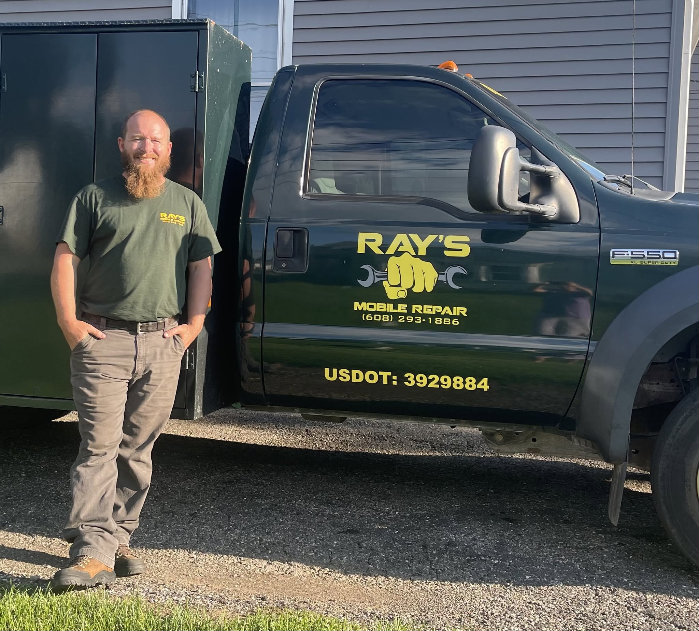

Local Business
Based in Monroe, WI and serving Green County and surrounding Southern Wisconsin communities.
About
A Monroe, Wisconsin mobile repair service built around practical service, honest work, and helping customers get back to work.
Owner Operated
Ray's Mobile Repair is a Monroe, Wisconsin-based mobile repair service founded by Raymond Johnson. Ray's provides emergency repairs, onsite DOT inspections, mobile repair and maintenance, custom accessory installs, and trailer repairs throughout Green County and surrounding areas.
The goal is simple: bring dependable repair service to the customer and help reduce downtime. Whether the job is roadside, at the shop, in the yard, on the farm, or at a business, Ray's Mobile Repair is built around practical service and honest work.

Based in Monroe, WI and serving Green County and surrounding Southern Wisconsin communities.
Clear communication, practical repairs, and a focus on helping customers make good decisions.
Built for truck, trailer, equipment, and commercial vehicle problems where downtime matters.
Values